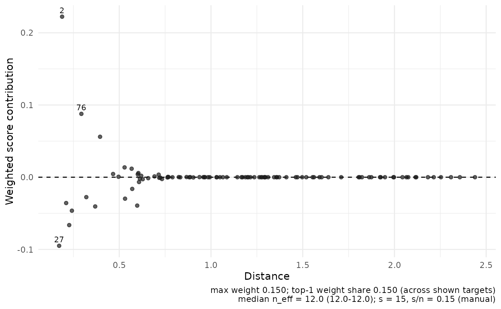

Plot per-observation contributions to a CATE or CLATE estimating equation
Source:R/plot-influence.R
plot_influence.RdFor a target j, each observation contributes
w_ij (psi_i - tau_hat_j) to the localized estimating equation; large
contributions mean the estimate leans on few observations. Drawn
against rank (or stored distance when available), with the largest
three absolute contributions labelled by observation index and the
weight-concentration diagnostics in the caption.
Arguments
- object
A
cate_resultorclate_resultwith the weight matrixWstored (the default).- targets
Optional integer vector of target ids (defaults to the first/median-
n_eff/last subset above eight targets).- pseudo_outcome
Optional numeric vector of length
n; used when the fit does not store the pseudo-outcome.- n_label
Integer; number of largest absolute contributions to label per target (default
3).- ...
Ignored; reserved for future options.
Details
The pseudo-outcome is taken from the fit; supply pseudo_outcome for
fits that do not store it.
For CLATE the contribution is w_ij (phi_Yi - theta_j phi_Di), using both
retained signals at the target's fitted ratio. These are weighted score
residuals, not delete-one pseudo-values or estimated individual effects.
Examples
if (requireNamespace("ggplot2", quietly = TRUE)) {
set.seed(1)
n <- 100
X <- matrix(rnorm(n * 2), n, 2)
psi <- rnorm(n, mean = X[, 1])
fit <- cate_dnn(
X = X, x0 = c(0, 0), pseudo_outcome = psi,
k = 1L, s = 15L, se = FALSE, return = c("W", "dx")
)
plot_influence(fit)
}
#> Ignoring unknown labels:
#> • colour : "target"
